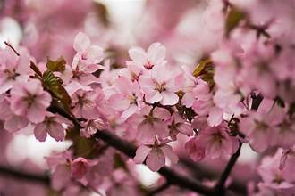
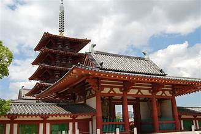
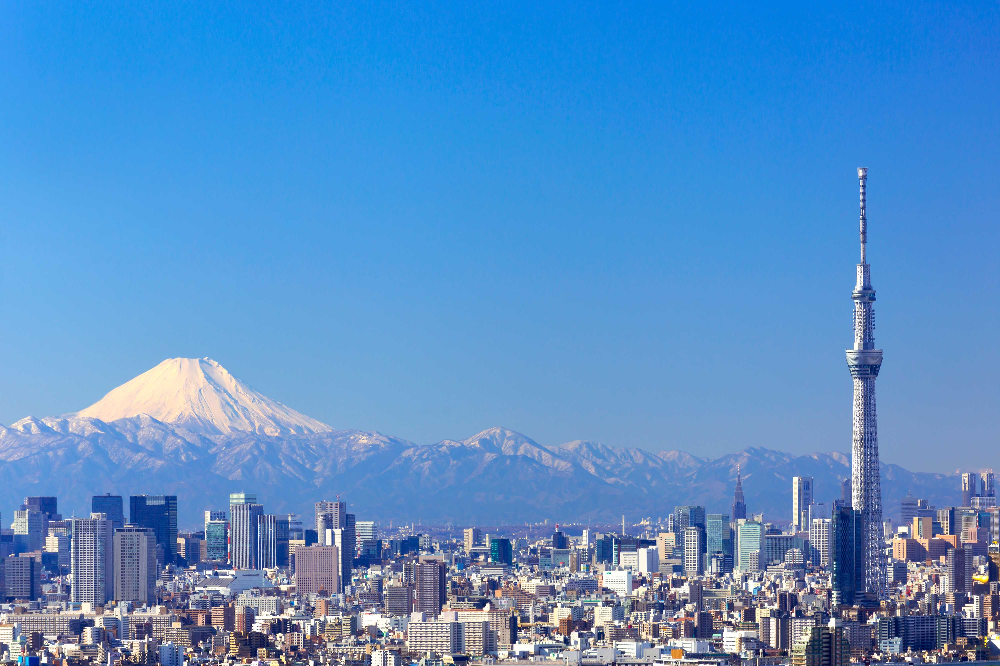
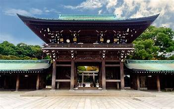
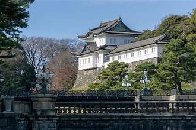
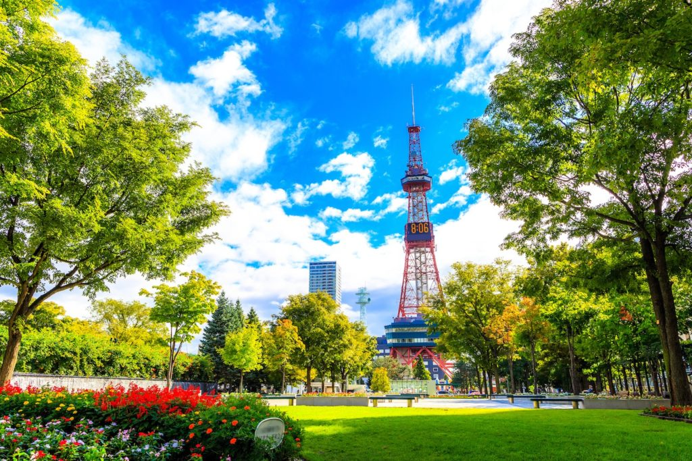
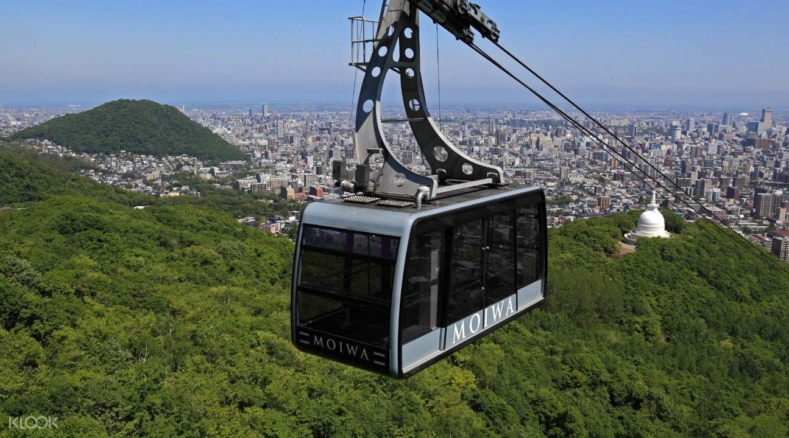

TOP TOURIST SPOT IN JAPAN
OSAKA JAPAN
Cherry Blossom
Osaka is one of Japan's best cities for cherry blossom viewing (hanami). Below is a list of the city's most popular hanami spots, including the typical timing for best viewing in the average year and japan-guide.com ratings. See also our nationwide list of famous cherry blossom spots.

Shitennoji Temple
Founded in the year 593, Shitenno-ji Temple, Japan's oldest temple, is a brief five-minute walk from Osaka Metro Shitennoji Yuhigaoka Station. The premises of this Osaka temple are rather expansive: around 11 hectares (27 acres) in size, about three times the size of Koshien Stadium.
It is also known as Arahaka-ji, Nanba-ji, or Mitsu-ji. The temple is sometimes regarded as the first Buddhist and oldest officially-administered temple in Japan,[1][2] although the temple complex and buildings have been rebuilt over the centuries, with the last reconstruction taking place in 1963. Shortly after World War II, Shitennō-ji became independent of the parent Tendai sect, and formed the "Wa" sect (wa-shū, 和宗) of Buddhism.[

Namba Yasaka Shrine
Namba Yasaka Shrine is a nice escape from the consumerist chaos of this district. The original buildings have been lost to air raids and fires, so the shrine buildings you’ll see here are primarily post-war reconstructions.
Namba Yasaka is famous for its impressive lion head-shaped building called Ema-Den, which measures 12-meters high by 11-meters wide! Ema-Den and the surrounding temple structures are all post-war reconstructions of the original buildings that were destroyed in air raids and fires in 1945.

TOKYO JAPAN
Skytree
The Tokyo Skytree is a towering structure that stands at a height of 634 meters, making it the tallest tower in Japan and the second tallest structure in the world.
It is a broadcasting tower and a popular tourist attraction, offering visitors breathtaking views of the city. The tower has two observation decks, one at 350 meters and the other at 450 meters above ground level, which provide stunning views of the city’s skyline.
Visitors can also enjoy a meal at one of the restaurants located within the tower, shop for souvenirs, or visit the aquarium and planetarium located at its base.
The Tokyo Skytree is a must-visit destination for anyone who wants to experience Tokyo’s modern and futuristic side while enjoying stunning panoramic views of the city.

Meiji Jingu
Meiji Jingu, also known as Meiji Shrine, is a Shinto shrine located in Shibuya, Tokyo. It was built in 1920 to honor Emperor Meiji and Empress Shoken, who played a significant role in Japan’s modernization.
The shrine is situated in a serene forest of over 100,000 trees, which were donated from all over Japan. Visitors can experience the tranquil atmosphere of the forest by taking a walk along the tree-lined paths leading to the shrine.
The main shrine building is made of cypress wood and copper and is one of the largest wooden structures in Japan. The shrine attracts many visitors, especially during the New Year’s period when it is a popular spot for hatsumode, the first shrine visit of the year.
Meiji Jingu is a peaceful oasis in the middle of the bustling city and a must-visit destination for anyone who wants to experience Japan’s spiritual side.

Imperial Palace
The Imperial Palace is the primary residence of the Emperor of Japan and is located in the Chiyoda district of Tokyo. It is surrounded by a moat and stone walls and features traditional Japanese gardens that are open to the public.
Visitors can take a guided tour of the palace grounds, which includes the East Gardens and the Imperial Palace Plaza, where they can see the Nijubashi Bridge, one of Tokyo’s most famous landmarks.
The palace is steeped in history and culture and offers visitors a glimpse into the imperial family’s life and traditions. Although the palace itself is not open to the public, the gardens and grounds provide a serene and peaceful escape from the hustle and bustle of the city.
The Imperial Palace is a must-visit destination for anyone who wants to experience Japan’s imperial history and enjoy the natural beauty of its gardens.

SAPORRO JAPAN
Odori Park
(Ōdōri Kōen) is an oasis of green in Sapporo's downtown core that slices through the city. It stands in stark contrast to the high-rises and offices around it, and serves as the best place from which to begin exploring this dynamic destination.
Not unlike the many broad avenues typical of European cities like Paris — its name in fact translates literally as "large street," which it once was — this delightfully wide one-and-a-half-kilometer-long stretch of park features a broad open space with gardens, fountains, and art sculptures. It also connects many of the city's most interesting attractions and things to do, such as the Sapporo TV Tower and various museums and galleries, as well as shopping and entertainment districts.
Odori Park also serves as an important venue for cultural events, including the spring Sapporo Lilac Festival and the always-popular Sapporo Snow Festival. It's also close to the underground shopping area and business district of Sapporo.

Hokkaidō Shrine
Built in 1871, the Hokkaidō Shrine (Hokkaidō Jingū) is one of the country's most important (and visited) Shinto religious sites. Located adjacent to Maruyama Park, the shrine became even more popular after it was dedicated to the soul of much revered Emperor Meiji in 1964.
The site is massive, and in addition to the huge temple building, it consists of a large garden replete with cherry blossoms, a big draw when they are in bloom each spring.
Another favorite time to visit is New Year's, when special celebrations and festivities are conducted, or during the annual Sapporo Festival every June, when long parades of traditionally dressed revelers visit the Hokkaidō Shrine and pay homage to their ancestors and the spirits of the country's most revered religious leaders.

Mount Moiwa Ropeway
Towering high above Sapporo, the 531-meter-tall Mount Moiwa (Moiwa-yama) is the most visited of the many hills surrounding the city due largely to the ease with which its summit can be reached. While a popular destination for walkers, by far the most-frequented option is to take the aerial tramway.
Mount Moiwa Ropeway (Moiwayama Rōpuwe) travels most of the way up the mountain before visitors transfer to a cable car that takes only minutes to reach the summit's Upper Station. Here, you'll not only be treated to great views over the city from the station's observation deck, you can also stop at its on-site restaurant or enjoy a show at its planetarium. It's an especially pleasant journey to make at night when the city far below is lit up.
Come winter, the Mount Moiwa Ski Resort lures snow sports enthusiasts from far and wide for its many fine slopes, all of them easily accessible from Sapporo's city center.
Another hill of interest is Hitsuji-ga-oka (the hill of sheep) located to the southeast of Sapporo and also offering beautiful views over the city.

BACK